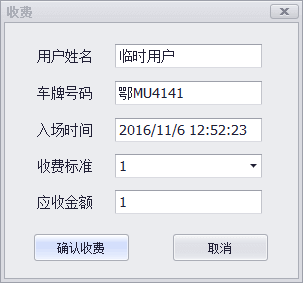
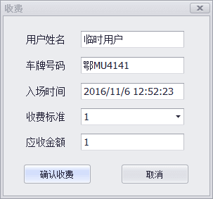
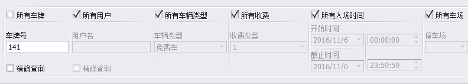

在弹出的对话框中设置"中央收费有效时间（分钟）."
在弹出的对话框中设置"中央收费有效时间（分钟）."
车辆要离开车场时,车主先去中央收费处缴费,再开车驶向停车场出口,在一定时间内闸机自动抬闸放行的收费模式.
中央收费是一种软件定义的功能,只需在软件内操作即可.
作用：车主在中央收费处交完费用后,必须在该有效时间内将车辆驶出停车场,否则将会产生停车费用.
登入软件,打开"车场公共属性配置".
打开"收费设置".
编辑收费标准,在弹出的对话框中设置"免费时间".
举例说明：
中央收费有效时间设定是15分钟,免费停车时间设定是20分钟.
车主到中央收费处缴费成功后,如果20分钟内车辆离开停车场不会重新收费且自动放行;
20分钟后如果车辆还没离场,当离场时会产生停车费用,系统会计算该车从中央缴费成功那刻起至离场那刻止停
留在车场所产生的费用.
当中央收费有效时间设定是20分钟,免费时间设定是15分钟时,车主缴费后依然可以免费停留20分钟.
所以,合理建议是将免费停车时间和中央收费有效时间设定成一致.
软件提供两种中央收费操作方式.
一种是在实时监控界面里,在这种方式下可看到车辆进场时的截图,也是系统比较推荐的方式.
另一种是在"在场车辆记录表"里,在这种方式下不能看到车辆截图.
打开"实时监控".
点击右下角的"实时监控"按钮. 在弹出对话框输入车牌查询.输入车牌时不需要输入完整车牌号,只需输入连续几个关键字即可.
选中查询到的车牌.
在弹出对话框输入车牌查询.输入车牌时不需要输入完整车牌号,只需输入连续几个关键字即可.
选中查询到的车牌.
 点击右上角"确定收费"按钮,弹出收费金额确认窗口.
按照显示金额收取费用后,点击"确认收费"完成中央收费操作.
点击右上角"确定收费"按钮,弹出收费金额确认窗口.
按照显示金额收取费用后,点击"确认收费"完成中央收费操作.
展开"报表管理",打开"在场车辆记录表".
在条件输入区域输入车牌,点击"查询"按钮.
出现对应车辆信息后,在车辆记录上右键选择"中央收费". 然后会弹出的收费窗口,据此收取费用.
然后会弹出的收费窗口,据此收取费用.
展开"报表管理",打开"中央收费记录表". 输入查询条件.
系统提供多样的查询条件,可以按车牌、操作员、车主姓名、车辆进场时间、实际收费时间查询.
输入查询条件.
系统提供多样的查询条件,可以按车牌、操作员、车主姓名、车辆进场时间、实际收费时间查询.
按收费时间段查询
点击"查询按钮",可以看到这段时间收费总额.